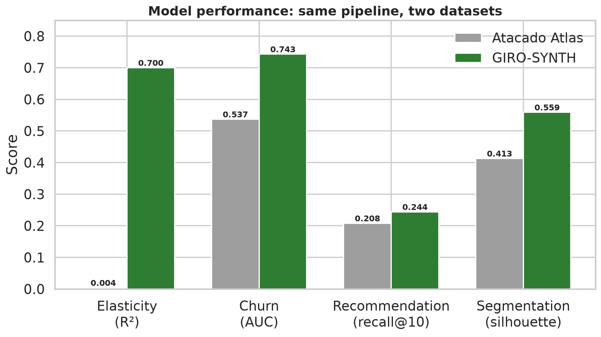
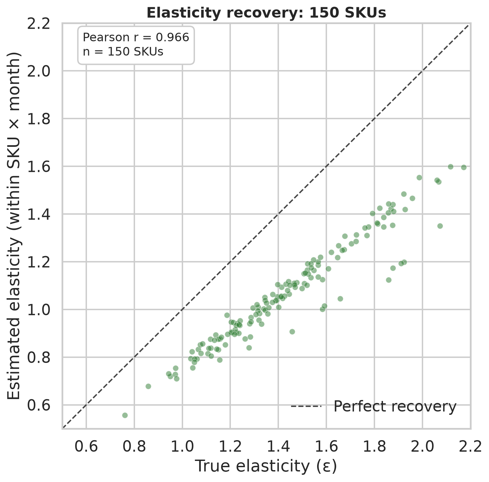
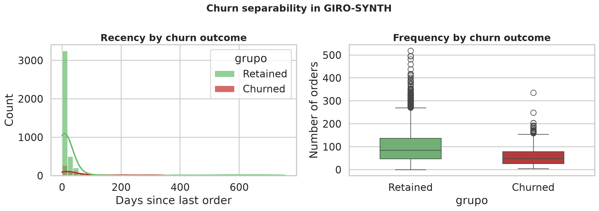
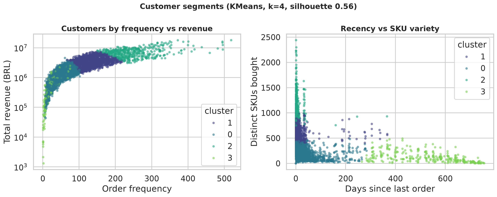
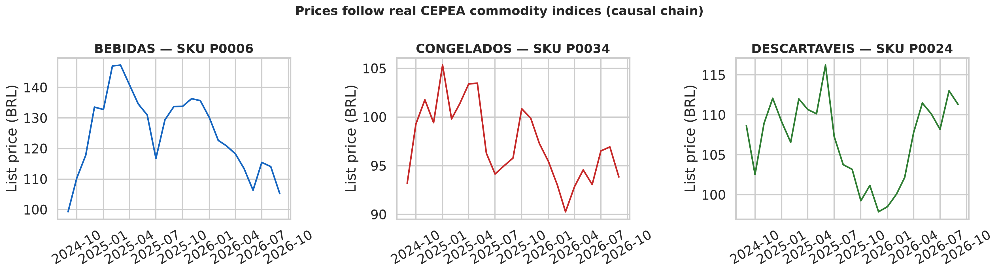
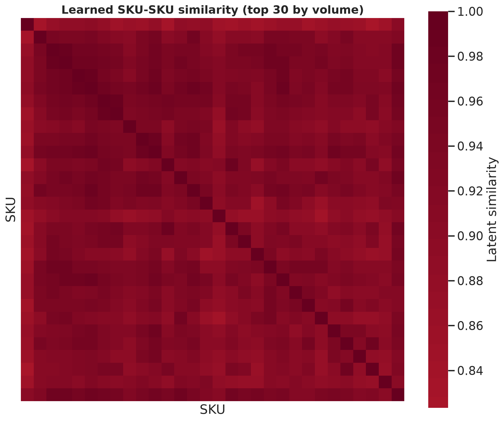

Benchmark: Atlas vs GIRO-SYNTH
Same pipeline, two datasets. The gap is the signal the Atlas does not contain.

Elasticity recovery
True epsilon vs estimated epsilon per SKU (within SKU x month). Pearson r = 0.995.

Churn separability
Recency and frequency distributions split cleanly between retained and churned customers.

Customer segments
KMeans (k=4) over RFM features, silhouette 0.56.

Causal price chain
List prices follow real CEPEA commodity indices for each category.

Learned SKU similarity
Item-item similarity from ALS latent factors, top 30 SKUs by volume.

Interactive benchmark
Open the Plotly chart in a new tab: 07_benchmark_interactive.html